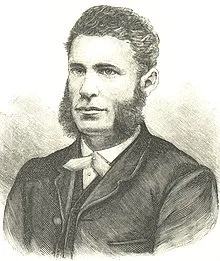
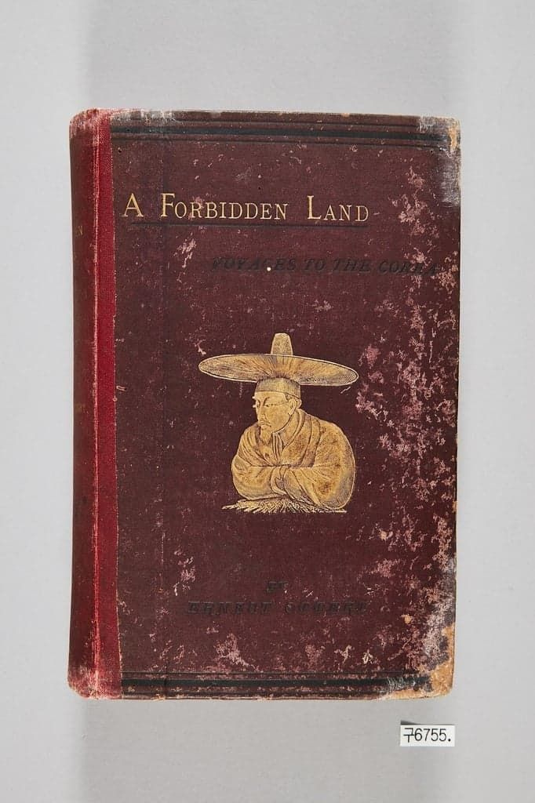
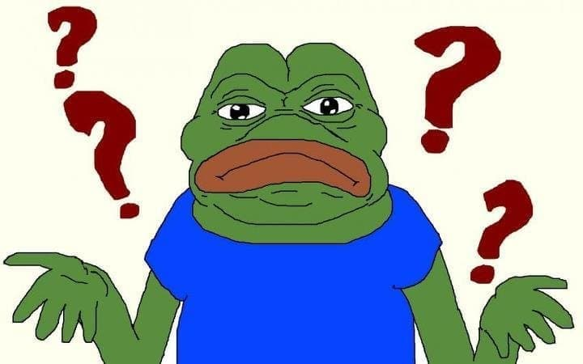
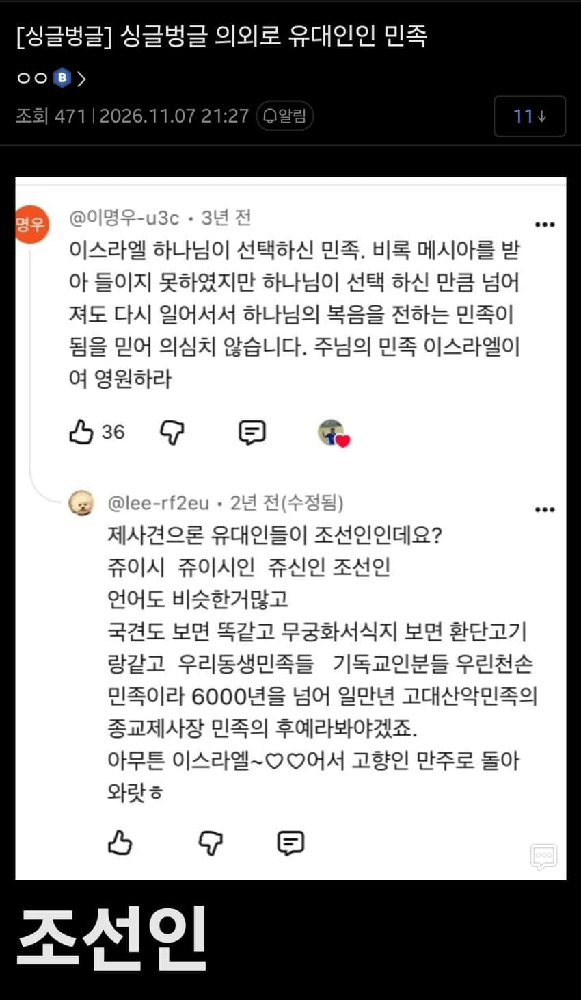

한국인 유대인설은 의외로 한국인이 만든게 아니라
오페르트라는 유대인이 만든건데
응? 오페르트?
흥선군 애비 무덤 털어서 조정이 놀라고 백성들이 경악하게 만든,
조선이 개발작하면서 척화비 세우고 쇄국령 내리게 만든 그 오페르트 맞음

오페르트는 조선 왕릉을 도굴한 경험을 바탕으로
독일로 돌아가 책도 내고 저명한 조선 전문가로 살아가게 되는데
조선인의 외양을 보아하니 일본과 중국인에 비해 키가 크고 피부가 하얗다면서
아..! 사실 조선인은 유대인이구나..!
라는 주장을 하게됨
자신이 중국에서 오래 지내봐서 아는데
조선인은 중국인이 아닌 백인처럼 생겼다고 주장함

아니 씨발 갑자기 뭔 개소리지? 싶을텐데 이런 주장이 나오는 이유가 있음
아시리아의 왕 살만에세르와 사르곤이 이스라엘의 수도 사마리아를 함락하면서
고대 이스라엘은 12지파 중 10지파를 잃어버려
남은 이스라엘 지파는 12개중 2개 밖에 남지 않게됨
그래서 어딘가에 헤어진 유대인들이 있을거라는 믿음으로
님 혹시 유대인인가? 하는 주장이 나오는거임
조선인=유대인설은 오페르트만 주장한것도 아니고
다른 유대인 학자들도
조선인은 사실 유대인인거 아닐?까? 라는 주장을 했음
잃어버린 이스라엘의 단 지파= 단 군
그래서 한국에서 이스라엘을 위해 싸우는 이들도

이런 주장에 동조하기도 함
하지만 유대인들이 한국한테만 이런것도 아니고
이스라엘 땅 점령한 터키 사람들 보고
이사람들은 본토에 쭉 살던 이스라엘 사람 아닐까?
하는 주장도 하고(이러고 이후에 다 학살해서 땅 뺐음)
아메리카 원주민들을 보고도
아따 시방 우리 식구들 아닌교 하면서 잃어버린 10지파설을 주장하기도 하며
대규모 미국 개척을함
미국의 세일럼주가 유대인의 살렘에서 따온거임.
번외로 제국주의 시대 일본인들은 만주 사변 이후
유대 자본의 도움이 필요해져서 스스로 자신들은 유대인이니
우덜 식구좀 도와달라고 하기도 했음
댓글
수집 당시 댓글 216개
· ㅇㅇ · 11.09 09:31:03
ㅇㅇ · 11.09 09:32:35
ㅇㅇ · 11.09 09:35:27
· ㅇㅇ · 11.09 09:36:50
· ㅇㅇ · 11.09 09:37:07
ㅇㅇ · 11.09 09:39:32
· ㅇㅇ · 11.09 09:43:56
ㅇㅇ · 11.09 09:41:01
ㅇㅇ · 11.09 09:43:13
ㅇㅇ · 11.09 09:43:19
ㅇㅇ · 11.09 09:44:02
ㅇㅇ · 11.09 09:53:17
· ㅇㅇ · 11.09 16:37:23
짱뽕따 · 11.09 09:53:22
ㅇㅇ · 11.09 09:56:30
그정도..
인가?
ㅇㅇ · 11.09 10:00:36
*개구리 · 11.09 10:02:38
*개구리 · 11.09 10:02:43
ㅇㅇ · 11.09 10:02:44
*개구리 · 11.09 10:02:53
ㅇㅇ · 11.09 10:03:14
· ㅇㅇ · 11.09 10:04:26
ㅇㅇ · 11.09 10:03:30
· ㅇㅇ · 11.09 10:23:53
ㅇㅇ · 11.09 10:07:05
· ㅇㅇ · 11.09 10:12:27
· ㅇㅇ · 11.09 10:38:09
ㅇㅇ · 11.09 10:07:19
ㅇㅇ · 11.09 10:09:43
ㅎㅎ · 11.09 10:22:59
· ㅇㅇ · 11.09 12:22:35
ㅇㅇ · 11.09 10:27:10
ㅇㅇ · 11.09 10:32:17
· ㅇㅇ · 11.09 10:42:15
ㅇㅇ · 11.09 10:37:11
ㅇㅇ · 11.09 10:38:21
ㅇㅇ · 11.09 10:47:36
독갤러 · 11.09 10:55:34
· 독갤러 · 11.09 10:56:29
· 독갤러 · 11.09 10:57:25
· 독갤러 · 11.09 10:59:34
· 독갤러 · 11.09 11:03:25
· 독갤러 · 11.09 11:04:50
· 독갤러 · 11.09 11:05:14
· 독갤러 · 11.09 11:10:57
· 독갤러 · 11.09 11:16:49
· 독갤러 · 11.09 11:18:58
· 독갤러 · 11.09 11:20:27
· 독갤러 · 11.09 11:21:24
· 독갤러 · 11.09 11:23:48
· 독갤러 · 11.09 11:46:54
· 독갤러 · 11.09 12:25:09
· 독갤러 · 11.09 12:35:22
· 독갤러 · 11.09 12:48:44
· 독갤러 · 11.09 18:05:33
무휼 · 11.09 10:56:59
ㅇㅇ · 11.09 11:18:45
ㅇㅇ · 11.09 11:19:38
· ㅇㅇ · 11.09 11:20:20
ㅇㅇ · 11.09 11:35:54
· ㅇㅇ · 11.09 14:04:30
ㅇㅇ · 11.09 11:38:53
ㅇㅇ · 11.09 11:41:53
· ㅇㅇ · 11.09 11:50:21
ㅇㅇ · 11.09 11:51:34
· ㅇㅇ · 11.09 12:34:37
11 · 11.09 11:51:50
ㅇㅇ · 11.09 11:57:03
ㅇㅇ · 11.09 12:00:58
혹시 네가 단 군이니?
ㅇㅇ · 11.09 12:01:22
그런데요? 곰 야스 한판하쉴?
ㅇㅇ · 11.09 12:02:50
ㅇㅇ · 11.09 12:03:26
ㅇㅇ · 11.09 12:06:15
ㅇㅇ · 11.09 12:11:37
ㅇㅇ · 11.09 12:18:09
· ㅇㅇ · 11.09 12:35:07
ㅇㅇ · 11.09 12:33:38
· ㅇㅇ · 11.09 13:09:43
· 제몸을막만지셨잖아요 · 11.09 17:07:05
· ㅇㅇ · 11.09 18:16:28
ㅇㅇ · 11.09 12:36:05
ㅇㅇ · 11.09 12:44:29
ㅇㅇ · 11.09 13:39:52
ㅇㅇ · 11.09 14:10:13
ㅇㅇ · 11.09 14:15:14
YasminWijnaldum · 11.09 14:17:49
ㅇㅇ · 11.09 14:58:42
ㅇㅇ · 11.09 15:00:14
· ㅇㅇ · 11.09 15:30:16
· ㅇㅇ · 11.09 18:17:20
ㅇㅇ · 11.09 15:01:12
· ㅇㅇ · 11.09 16:33:16
· ㅇㅇ · 11.09 16:33:39
· ㅇㅇ · 11.09 18:21:35
ㅇㅇ · 11.09 15:28:41
우흥 · 11.09 16:28:23
ㅇㅇ · 11.09 16:42:26
· ㅇㅇ · 11.09 18:16:58
ㅇㅇ · 11.09 17:13:43
ㅇㅇ · 11.09 18:42:11
ㅇㅇ · 11.07 22:23:02
· ㅇㅇ · 11.07 22:37:44
· ㅇㅇ · 11.08 00:57:27
· ㅇㅇ · 11.08 04:48:59
· ㅇㅇ · 11.08 09:41:03
· ㅇㅇ · 11.09 09:06:14
· ㅇㅇ · 11.09 09:13:12
· ㅇㅇ · 11.09 09:15:02
· ㅇㅇ · 11.09 09:29:27
아카라이브공부법으로수능만점쟁취하자 · 11.07 22:26:48
· ㅇㅇ · 11.07 22:36:03
· ㅇㅇ · 11.08 10:56:16
· ㅇㅇ · 11.09 09:36:46
ㅇㅇ · 11.07 22:28:23
부키랑랑 · 11.07 22:30:02
· ㅇㅇ · 11.07 22:33:15
· ㅇㅇ · 11.07 22:34:28
· ㅇㅇ · 11.07 22:34:36
· ㅇㅇ · 11.07 22:35:08
· ㅇㅇ · 11.09 09:40:55
· ㅇㅇ · 11.09 09:58:37
· ㅇㅇ · 11.09 09:59:27
· ㅇㅇ · 11.09 10:01:17
)*( · 11.07 22:31:08
모모링이나연 · 11.07 22:32:26
· ㅇㅇ · 11.07 22:53:23
ㅇㅇ · 11.07 22:32:55
마유미 · 11.07 22:34:54
ㅇㅇ · 11.07 22:38:08
디비자 · 11.07 22:44:55
ㅇㅇ · 11.07 23:01:15
ㅇㅇ · 11.07 23:16:53
· ㅇㅇ · 11.09 09:12:16
· ㅇㅇ · 11.09 10:22:53
ㅇㅇ · 11.07 23:39:08
소라고동닉 · 11.08 00:05:26
ㅇㅇ · 11.08 00:05:30
ㅇㅇ · 11.08 00:11:22
· 개댇지 · 11.08 04:29:32
ㅇㄷㄷㅇ · 11.08 00:29:27
· 솔그륀 · 11.09 11:00:20
BDSM · 11.08 01:12:09
우간다농수산식품장관 · 11.08 15:13:29
땨뗘(봇) · 11.09 08:55:05
ㅇㅇ · 11.09 08:56:34
· ㅇㅇ · 11.09 08:57:26
· ㅇㅇ · 11.09 08:57:40
· ㅇㅇ · 11.09 08:58:09
· ㅇㅇ · 11.09 08:58:26
· ㅇㅇ · 11.09 09:10:57
· ㅇㅇ · 11.09 09:14:23
여갤러 · 11.09 08:57:31
PP사비 · 11.09 08:58:01
캐피탈리즘 · 11.09 08:58:10
· ㅇㅇ · 11.09 08:58:48
· 캐피탈리즘 · 11.09 09:19:34
케떡 · 11.09 08:59:46
ㅇㅇ · 11.09 09:00:05
ㅇㅇ · 11.09 09:00:23
ㅇㅇ · 11.09 09:04:59
· ㅇㅇ · 11.09 12:09:38
ㅇㅇ · 11.09 09:06:07
토라만 · 11.09 09:06:27
ㅇㅇ · 11.09 09:06:36
ㅇㅇ · 11.09 09:08:18
· ㅇㅇ · 11.09 09:43:12
ㅇㅇ · 11.09 09:08:47
· ㅇㅇ · 11.09 09:11:22
· ㅇㅇ · 11.09 09:11:33
· ㅇㅇ · 11.09 09:13:31
ㅇㅇ · 11.09 09:09:09
ㅇㅇ · 11.09 09:11:16
· ㅇㅇ · 11.09 09:11:47
ㅇㅇ · 11.09 09:11:26
캘리포니아호두가싼이유 · 11.09 09:12:00
ㅇㅇ · 11.09 09:12:09
· ㅇㅇ · 11.09 09:13:26
도깨비빤스 · 11.09 09:12:25
ㅇㅇ · 11.09 09:12:49
ㅇㅇ · 11.09 09:13:09
ㅇㅇ · 11.09 09:14:11
· ㅇㅇ · 11.09 09:16:46
· ㅇㅇ · 11.09 09:17:44
다람 · 11.09 09:15:05
우리가
남이가
ㅇㅇ · 11.09 09:15:29
· ㅇㅇ · 11.09 09:16:44
· ㅇㅇ · 11.09 14:39:01
ㅇㅇ · 11.09 09:16:11
ㅇㅇ · 11.09 09:17:54
· ㅇㅇ · 11.09 09:21:01
· ㅇㅇ · 11.09 09:21:21
ㅇㅇ · 11.09 09:18:59
· ㅇㅇ · 11.09 09:19:15
ㅇㅇ · 11.09 09:19:07
ㅇㅇ · 11.09 09:22:09
냠븜 · 11.09 09:25:30
나도디시콘쓸꺼야 · 11.09 09:25:42
ㅇㅇ · 11.09 09:26:39
ㅇㅇ · 11.09 09:27:30
· ㅇㅇ · 11.09 09:29:27
안경음침녀 · 11.07 22:09:22
· ㅇㅇ · 11.07 22:09:51
· ㅇㅇ · 11.07 22:10:34
ㅇㅇ · 11.07 22:10:36
아비아나 · 11.07 22:12:20
밋아 · 11.07 22:12:41
ㅇㅇ · 11.07 22:13:15
· ㅇㅇ · 11.07 22:43:43
· dd · 11.07 23:03:57
· ㅇㅇ · 11.09 09:18:47
· 테이블나이프 · 11.09 09:29:14
ㅇㅇ · 11.07 22:13:22
· ㅇㅇ · 11.09 09:35:47
Bluearchive · 11.07 22:16:49
저먼스플렉스 · 11.07 22:18:57
ㅇㅇ · 11.07 22:21:15